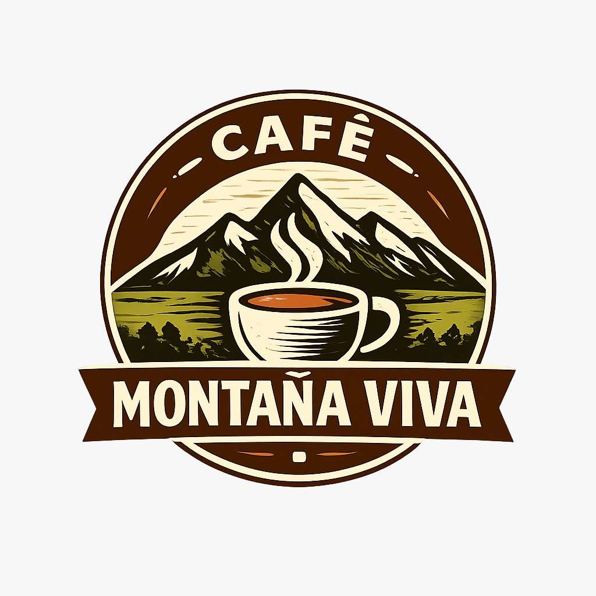
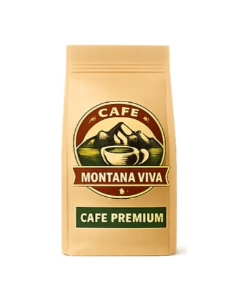
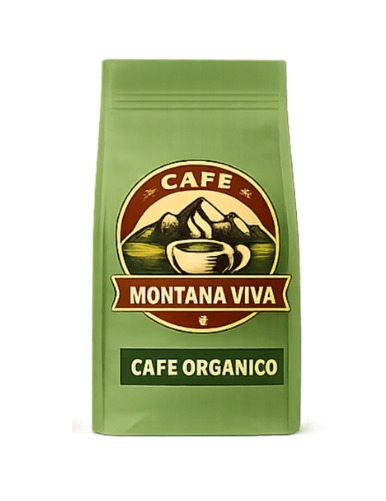
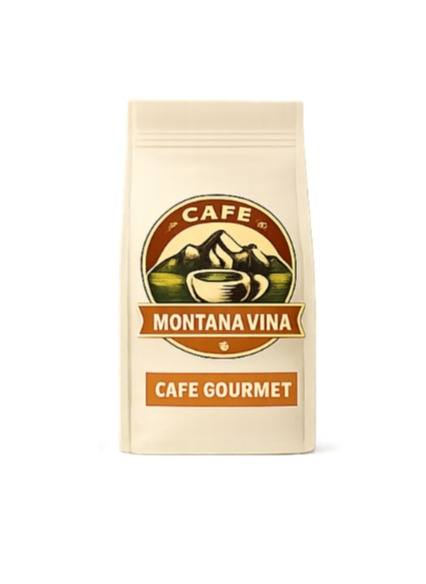
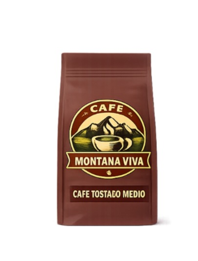
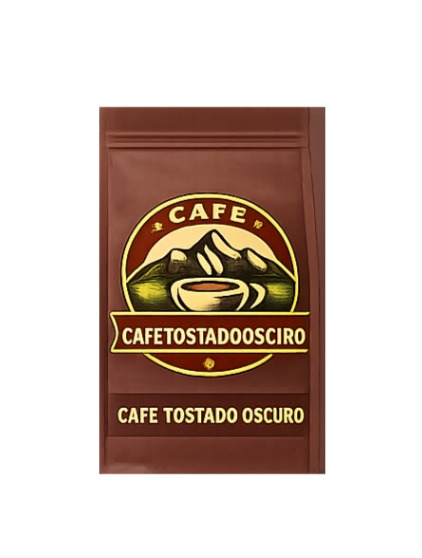
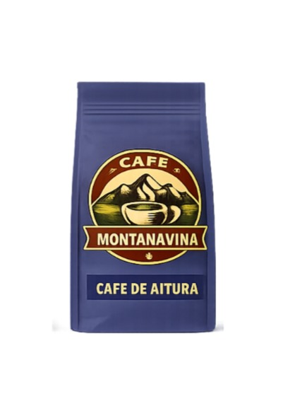

Cada variedad cuenta una historia. Encuentra el café que habla contigo.

PremiumCafé 100% arábica cultivado en las montañas colombianas. Se caracteriza por su aroma intenso, sabor equilibrado y notas suaves de chocolate y caramelo.

OrgánicoCultivado sin pesticidas ni químicos, respetando el medio ambiente y las tradiciones agrícolas. Tiene un sabor fresco con ligeras notas frutales.

GourmetSelección especial de granos cuidadosamente tostados para ofrecer un café de calidad superior con aroma profundo y sabor sofisticado.

Tostado MedioUn café equilibrado con tostado medio que resalta sus notas naturales de cacao y frutos secos, ideal para disfrutar a cualquier hora del día.

Tostado OscuroPerfecto para los amantes del café fuerte. Su tostado intenso ofrece un sabor profundo, cuerpo robusto y un aroma muy pronunciado.

De AlturaCultivado en regiones montañosas donde el clima y la altura favorecen granos de mayor calidad, ofreciendo un sabor complejo y aromático.